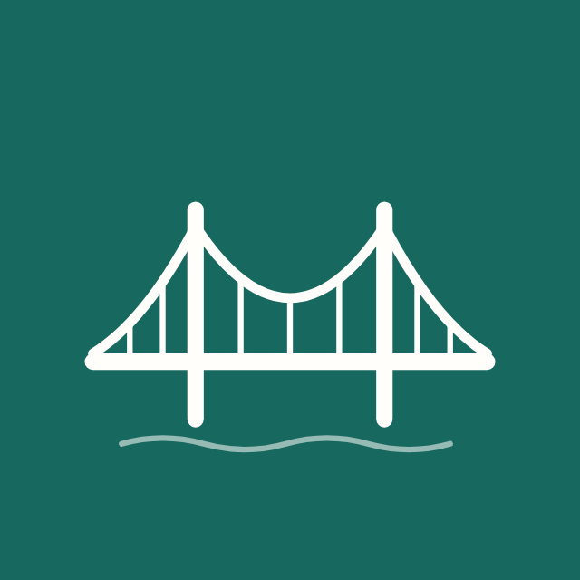

Kreng-jai Bridge
AI ช่วยทีมคุยกัน
แชท
เกี่ยวกับเรา
ผู้ช่วย AI บน LINE สำหรับทีมทำงาน ช่วยเตือนงานอย่างเป็นกลาง และเปลี่ยนความกังวลเป็นความเห็นนิรนาม เพื่อให้ทีมคุยกันและแก้ปัญหาไปด้วยกัน
เริ่มใช้งาน: กดแชท แล้วพิมพ์ “ช่วยเหลือ”
โครงการต้นแบบ · Huawei ICT Competition 2026